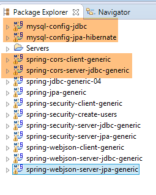
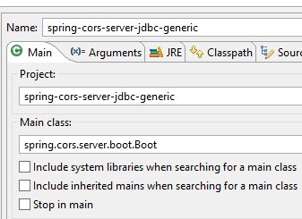
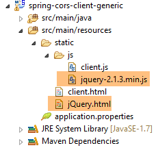
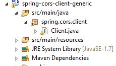
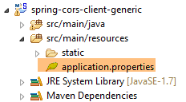
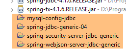
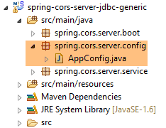
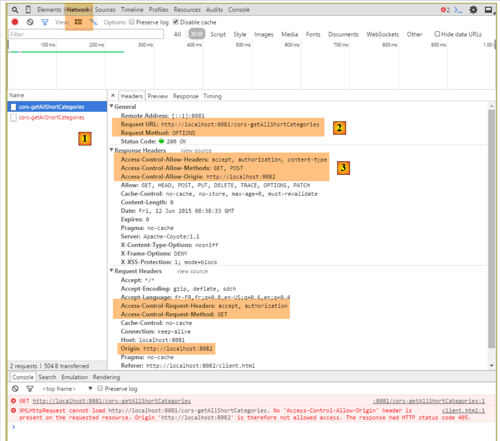
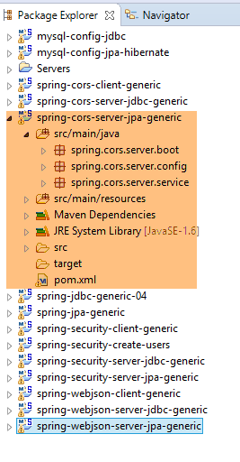
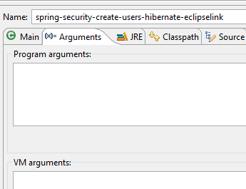

21. إدارة الوصول عبر المجالات
21.1. البنية
سنقوم الآن بدراسة مسألة الطلبات عبر المجالات. في الوثيقة [دليل AngularJS / Spring 4]، نقوم بتطوير تطبيق عميل/خادم حيث يكون العميل تطبيق AngularJS:
 |
- تأتي صفحات HTML/CSS/JS لتطبيق Angular من الخادم [1]؛
- في [2]، تقوم خدمة [dao] بإرسال طلب إلى خادم آخر، وهو الخادم [2]. حسناً، هذا أمر محظور من قبل المتصفح الذي يشغل تطبيق Angular لأنه يمثل ثغرة أمنية. لا يمكن للتطبيق الاستعلام إلا عن الخادم الذي ينشأ منه، أي الخادم [1]؛
في الواقع، من غير الدقيق القول إن المتصفح يمنع تطبيق Angular من الاستعلام عن الخادم [2]. يقوم المتصفح في الواقع بالاستعلام عن الخادم [2] لتحديد ما إذا كان يسمح لعميل لا ينتمي إلى نطاقه بالاستعلام عنه. تسمى تقنية المشاركة هذه CORS (Cross-Origin Resource Sharing). يمنح الخادم [2] الإذن عن طريق إرسال رؤوس HTTP محددة.
لتوضيح المشكلات التي قد تنشأ، سننشئ تطبيق عميل/خادم حيث:
- سيكون الخادم هو خادم الويب/JSON الآمن الخاص بنا؛
- سيكون العميل عبارة عن صفحة HTML بسيطة مزودة برمز JavaScript الذي سيقوم بإرسال الطلبات إلى خادم الويب/JSON؛
سنقوم بتنفيذ البنية التالية:
 |
- في [1]، يقوم تطبيق ويب بتقديم صفحات HTML/JS؛
- في [2]، يقوم المتصفح بتنفيذ JavaScript المضمن في صفحات HTML للاستعلام عن خدمة الويب الآمنة [3]؛
21.2. مشروع [spring-cors-server-jdbc-generic]
21.2.1. إعداد بيئة التطوير
 |
- قم بتنزيل المشاريع المذكورة أعلاه. يمكن العثور على مشاريع [spring-cors-*] في المجلد [<examples>\spring-database-generic\spring-cors]؛
- اضغط على Alt-F5 وأعد بناء جميع مشاريع Maven؛
ثم قم بتشغيل تكوين التشغيل المسمى [spring-cors-server-jdbc-generic] (يجب أن تكون قاعدة بيانات MySQL قيد التشغيل)، والذي يبدأ خدمة ويب على المنفذ 8081:
 |
قم بتعبئة قاعدة البيانات [dbproduitscategories] باستخدام تكوين وقت التشغيل المسمى [spring-jdbc-generic-04-fillDataBase]:
 |
قم بتشغيل تكوين وقت التشغيل المسمى [spring-cors-client-generic]، والذي يقوم بتشغيل تطبيق ويب ثانٍ (على مثيل Tomcat آخر) على المنفذ 8082:
 |
باستخدام متصفح، اطلب عنوان URL [http://localhost:8082/client.html]:
 |
- في [1]، نطلب النسخة المختصرة لجميع الفئات؛
- في [2]، نطلب استجابة JSON من الخادم؛
21.2.2. مشروع العميل [spring-cors-client-generic]
 |
 |
يتيح لنا ملف [application.properties] تعيين المنفذ لتطبيق الويب الخاص بالعميل. وفيما يلي محتوياته:
server.port=8082
وبالتالي:
- العميل هو تطبيق ويب متاح على عنوان URL [http://localhost:8082]؛
- الخادم هو تطبيق ويب متاح على عنوان URL [http://localhost:8081]؛
نظرًا لأن الوصول إلى العميل لا يتم عبر نفس المنفذ الذي يستخدمه الخادم، تنشأ مشكلة الطلبات عبر النطاقات. في الواقع، [http://localhost:8081] و [http://localhost:8082] هما نطاقان مختلفان.
21.2.3. تكوين Maven
المشروع هو مشروع Maven يحتوي على ملف [pom.xml] التالي:
<?xml version="1.0" encoding="UTF-8"?>
<project xmlns="http://maven.apache.org/POM/4.0.0" xmlns:xsi="http://www.w3.org/2001/XMLSchema-instance"
xsi:schemaLocation="http://maven.apache.org/POM/4.0.0 http://maven.apache.org/xsd/maven-4.0.0.xsd">
<modelVersion>4.0.0</modelVersion>
<groupId>dvp.spring.database</groupId>
<artifactId>spring-cors-client-generic</artifactId>
<version>0.0.1-SNAPSHOT</version>
<packaging>jar</packaging>
<name>spring-cors-client-generic</name>
<description>Client cors for webjson server</description>
<parent>
<groupId>org.springframework.boot</groupId>
<artifactId>spring-boot-starter-parent</artifactId>
<version>1.2.3.RELEASE</version>
<relativePath /> <!-- lookup parent from repository -->
</parent>
<properties>
<project.build.sourceEncoding>UTF-8</project.build.sourceEncoding>
<java.version>1.7</java.version>
</properties>
<dependencies>
<dependency>
<groupId>org.springframework.boot</groupId>
<artifactId>spring-boot-starter-web</artifactId>
</dependency>
</dependencies>
<!-- plugins -->
<build>
<plugins>
<plugin>
<groupId>org.springframework.boot</groupId>
<artifactId>spring-boot-maven-plugin</artifactId>
</plugin>
<plugin>
<artifactId>maven-assembly-plugin</artifactId>
<configuration>
<descriptorRefs>
<descriptorRef>jar-with-dependencies</descriptorRef>
</descriptorRefs>
</configuration>
</plugin>
<plugin>
<groupId>org.apache.maven.plugins</groupId>
<artifactId>maven-surefire-plugin</artifactId>
<version>2.18.1</version>
</plugin>
</plugins>
</build>
</project>
- الأسطر 14–19: هذا مشروع Spring Boot؛
- الأسطر 27–30: نستخدم التبعية [spring-boot-starter-web]، التي تتضمن خادم Tomcat و Spring MVC؛
21.2.4. أساسيات jQuery و JavaScript
 |
يقدم تطبيق الويب الصفحة الواحدة التالية:
 |
يتضمن كود JavaScript (JS) الذي يعمل في المتصفح. سنستعرض بعض أساسيات JavaScript لمساعدتنا على فهم الكود. سيقوم العميل بإرسال طلبات HTTP باستخدام مكتبة jQuery [https://jquery.com/]، التي توفر العديد من الوظائف التي تبسط عملية تطوير JavaScript. نقوم بإنشاء ملف HTML ثابت [jQuery.html] ونضعه في المجلد [static]:
 |
سيحتوي هذا الملف على المحتوى التالي:
<!DOCTYPE html>
<html xmlns="http://www.w3.org/1999/xhtml">
<head>
<meta http-equiv="Content-Type" content="text/html; charset=utf-8" />
<title>JQuery-01</title>
<script type="text/javascript" src="/js/jquery-2.1.3.min.js"></script>
</head>
<body>
<h3>Rudiments de JQuery</h3>
<div id="element1">
Elément 1
</div>
</body>
</html>
- السطر 6: استيراد jQuery؛
- الأسطر 10–12: عنصر صفحة بمعرف [element1]. سنعمل مع هذا العنصر.
نحتاج إلى تنزيل الملف [jquery-2.1.3.min.js]. يمكنك العثور على أحدث إصدار من jQuery على الرابط [http://jquery.com/download/]:

سنضع الملف الذي تم تنزيله في المجلد [static/js]:
بمجرد الانتهاء من ذلك، افتح العرض الثابت [jQuery.html] في متصفح Chrome [1-2]:
 |
في Google Chrome، اضغط على [Ctrl-Shift-I] لفتح أدوات المطور [3]. تتيح لك علامة التبويب [Console] [4] تشغيل كود JavaScript. أدناه، نقدم أوامر JavaScript التي يمكنك كتابتها ونشرح وظائفها.
|
: تُرجع مجموعة جميع العناصر التي تحمل المعرف [element1]، لذا عادةً ما تكون المجموعة تتكون من عنصر واحد أو عنصرين، لأنه لا يمكن وجود معرفين متطابقين في صفحة HTML. |  |
|
: يعين النص [blabla] لجميع العناصر في المجموعة. يؤدي هذا إلى تغيير المحتوى المعروض على الصفحة |  |
|
يخفي العناصر الموجودة في المجموعة. لم يعد النص [blabla] لم يعد معروضًا. |  |
|
: يعرض المجموعة مرة أخرى. هذا يسمح لنا برؤية أن العنصر الذي يحمل المعرف [element1] يحتوي سمة CSS style='display: none;'، مما إخفاء العنصر. | |
|
: يعرض العناصر الموجودة في المجموعة. يظهر النص [blabla] مرة أخرى. إنها السمة style='display: block;' هو الذي يضمن هذا . |  |
|
: يحدد سمة لجميع العناصر في المجموعة. السمة هنا هي [style] وقيمتها [color: red]. يتحول النص [blabla] إلى اللون الأحمر. |  |
 | |
 |
لاحظ أن عنوان URL للمتصفح لم يتغير خلال كل هذه العمليات. لم يكن هناك أي اتصال بخادم الويب. كل شيء يحدث داخل المتصفح. والآن، دعونا نلقي نظرة على كود مصدر الصفحة:
<!DOCTYPE html>
<html xmlns="http://www.w3.org/1999/xhtml">
<head>
<meta http-equiv="Content-Type" content="text/html; charset=utf-8" />
<title>JQuery-01</title>
<script type="text/javascript" src="/js/jquery-1.11.1.min.js"></script>
</head>
<body>
<h3>Rudiments de JQuery</h3>
<div id="element1">
Elément 1
</div>
</body>
</html>
هذا هو النص الأصلي. وهو لا يعكس التغييرات التي تم إجراؤها على العنصر في الأسطر 10–12. من المهم أخذ ذلك في الاعتبار عند تصحيح أخطاء JavaScript. في مثل هذه الحالات، غالبًا ما يكون من غير الضروري عرض شفرة المصدر للصفحة المعروضة.
21.2.5. كود JavaScript الخاص بالتطبيق
لنعد إلى كود HTML لصفحة تطبيق العميل التي ستستعلم عن خدمة الويب / JSON:
|
<!DOCTYPE html>
<html>
<head>
<meta charset="UTF-8">
<title>Spring MVC</title>
<script type="text/javascript" src="/js/jquery-2.1.1.min.js"></script>
<script type="text/javascript" src="/js/client.js"></script>
</head>
<body>
<h2>Client du service web / jSON</h2>
<form id="formulaire">
<!-- method HTTP -->
Méthode HTTP :
<!-- -->
<input type="radio" id="get" name="method" value="get" checked="checked" />GET
<!-- -->
<input type="radio" id="post" name="method" value="post" />POST
<!-- URL -->
<br /> <br />URL cible : <input type="text" id="url" size="30"><br />
<!-- posted value -->
<br /> Chaîne jSON à poster : <input type="text" id="posted" size="50" />
<!-- validation button -->
<br /> <br /> <input type="submit" value="Valider" onclick="javascript:requestServer(); return false;"></input>
</form>
<hr />
<h2>Réponse du serveur</h2>
<div id="response"></div>
</body>
</html>
- السطر 6: نستورد مكتبة jQuery؛
- السطر 7: نستورد الكود الذي سنكتبه؛
- الأسطر 11 و15 و17 و21: لاحظ معرفات [id] لمكونات الصفحة. يشير JavaScript إلى هذه المكونات عبر هذه المعرفات؛
الكود [client.js] هو كما يلي:
// global data
var url;
var posted;
var response;
var method;
function requestServer() {
// retrieve information from the form
var urlValue = url.val();
var postedValue = posted.val();
method = document.forms[0].elements['method'].value;
// make a manual Ajax call
if (method === "get") {
doGet(urlValue);
} else {
doPost(urlValue, postedValue);
}
}
function doGet(url) {
// make a manual Ajax call
$.ajax({
headers : {
'Authorization' : 'Basic YWRtaW46YWRtaW4='
},
url : 'http://localhost:8081' + url,
type : 'GET',
dataType : 'tex/plain',
beforeSend : function() {
},
success : function(data) {
// text result
response.text(data);
},
complete : function() {
},
error : function(jqXHR) {
// system error
response.text(jqXHR.responseText);
}
})
}
function doPost(url, posted) {
// make a manual Ajax call
$.ajax({
headers : {
'Authorization' : 'Basic YWRtaW46YWRtaW4='
},
url : 'http://localhost:8081 ' + url,
type : 'POST',
contentType : 'application/json',
data : posted,
dataType : 'tex/plain',
beforeSend : function() {
},
success : function(data) {
// text result
response.text(data);
},
complete : function() {
},
error : function(jqXHR) {
// system error
response.text(jqXHR.responseText);
}
})
}
// document loading
$(document).ready(function() {
// retrieve page component references
url = $("#url");
posted = $("#posted");
response = $("#response");
});
- الأسطر 71–75: كود JavaScript الذي يتم تنفيذه بعد انتهاء تحميل المستند في المتصفح؛
- الأسطر 73-75: استرداد مراجع ثلاثة عناصر في مستند HTML؛
- الأسطر 2-5: متغيرات عامة معروفة في جميع الوظائف المحددة في ملف JavaScript؛
- السطر 9: يسترد عنوان URL الذي أدخله المستخدم؛
- السطر 10: يسترد القيمة التي يريد المستخدم إرسالها؛
- السطر 11: يسترد الطريقة [get] أو [post] لاستخدامها عند طلب عنوان URL من السطر 9:
- يشير document إلى المستند الذي تم تحميله بواسطة المتصفح، والمعروف باسم DOM (نموذج كائن المستند)،
- document.forms[0] يشير إلى النموذج الأول في المستند؛ قد يحتوي المستند على نماذج متعددة. هنا، يوجد نموذج واحد فقط؛
- document.forms[0].elements['method'] يشير إلى عنصر النموذج الذي يحتوي على السمة [name='method']. هناك اثنان:
<input type="radio" id="get" name="method" value="get" checked="checked" />GET
<input type="radio" id="post" name="method" value="post" />POST
- (تابع)
- document.forms[0].elements['method'].value هي القيمة التي سيتم إرسالها للمكون الذي يحتوي على السمة [name='method']. ونحن نعلم أن القيمة المرسلة هي قيمة السمة [value] الخاصة بزر الاختيار المحدد. وبالتالي، ستكون هنا إحدى السلاسل ['get', 'post'];
- الأسطر 13–18: اعتمادًا على طريقة HTTP التي سيتم استخدامها، يتم تنفيذ إما طريقة [doGet] أو [doPost]؛
- تقوم طريقة jQuery [$.ajax] بإجراء طلب HTTP؛
- الأسطر 23-25: نحن نتواصل مع خادم يتطلب رأس HTTP [Authorization: Basic code]. نقوم بإنشاء هذا الرأس للمستخدم [admin / admin]، وهو الوحيد المصرح له بالاستعلام عن الخادم؛
- السطر 26: سيقوم المستخدم بإدخال عناوين URL بالشكل [/getAllLongCategories, /saveCategories, ...]. لذلك يجب إكمال عناوين URL هذه؛
- السطر 27: طريقة HTTP المطلوب استخدامها؛
- السطر 28: يعرض الخادم JSON. نحدد النوع [text/plain] كنوع الاستجابة بحيث يتم عرضه تمامًا كما تم استلامه؛
- السطر 33: عرض استجابة النص من الخادم؛
- السطر 39: عرض أي رسالة خطأ بتنسيق نصي؛
- السطر 44: تستقبل طريقة [doPost] معلمة ثانية، وهي القيمة المراد إرسالها؛
- السطر 52: للإشارة إلى أن القيمة المرسلة ستكون في شكل سلسلة JSON؛
21.2.6. تنفيذ العميل
تطبيق العميل هو تطبيق وحدة تحكم يتم تشغيله بواسطة فئة [Client] القابلة للتنفيذ التالية:
 |
package spring.cors.client;
import org.springframework.boot.SpringApplication;
import org.springframework.boot.autoconfigure.EnableAutoConfiguration;
@EnableAutoConfiguration
public class Client {
public static void main(String[] args) {
SpringApplication.run(Client.class, args);
}
}
- السطر 6: التعليق التوضيحي [@EnableAutoConfiguration] هو تعليق توضيحي لمشروع [Spring Boot] (السطر 4). سيقوم Spring Boot بفحص الأرشيفات الموجودة في مسار فئات المشروع. في هذه الحالة، ستكون هذه هي جميع تبعيات Maven التي توفرها التبعية الوحيدة في ملف [pom.xml]:
<dependencies>
<dependency>
<groupId>org.springframework.boot</groupId>
<artifactId>spring-boot-starter-web</artifactId>
</dependency>
</dependencies>
تتضمن هذه التبعية عددًا كبيرًا من المكتبات، ولا سيما Spring MVC وخادم Tomcat. وبسبب هذه التبعيات، سيقوم Spring Boot بتكوين مشروع Spring MVC يعمل على Tomcat باستخدام القيم الافتراضية. ثم يتم تكوين خادم Tomcat للتشغيل على المنفذ 8080. إذا كنت ترغب في تجاوز القيم الافتراضية التي اختارها Spring Boot، يمكنك استخدام ملف [application.properties] الموجود في جذر مسار الفصل (كل ما يوجد في [src/main/resources] موجود في جذر مسار الفصل):
 |
نحدد أن يعمل خادم Tomcat على المنفذ 8082 على النحو التالي:
server.port=8082
تتوفر قائمة بالمعلمات التي يمكن استخدامها في [application.properties] على الرابط (يونيو 2015) [http://docs.spring.io/spring-boot/docs/current/reference/html/common-application-properties.html]؛
العودة إلى الكود في [Client.java]:
- السطر 10: ستقوم طريقة [SpringApplication.run] بنشر صفحة [client.html] على خادم Tomcat الموجود في مسار فئات المشروع؛
21.2.7. عنوان URL [/getAllShortCategories]
 |
نقوم بتشغيل:
- خادم الويب/JSON الآمن على المنفذ 8081 (التكوين [spring-security-server-jdbc-generic])؛
- العميل لهذا الخادم على المنفذ 8082 (التكوين [spring-cors-client-generic])؛
ثم نطلب عنوان URL [http://localhost:8082/client.html] [1]:
 |
- في [2]، نقوم بإجراء طلب GET على عنوان URL [http://localhost:8081/getAllShortCategories]؛
لا نتلقى أي استجابة من الخادم. وعندما ننظر إلى وحدة تحكم مطوري Chrome (Ctrl-Shift-I)، نرى خطأً:
 |
- في [1]، نحن في علامة التبويب [الشبكة]؛
- في [2]، نرى أن طلب HTTP الذي تم إرساله ليس [GET] بل [OPTIONS]. في حالة طلب عبر النطاقات، يتحقق المتصفح من الخادم للتأكد من استيفاء شروط معينة عن طريق إرسال طلب HTTP [OPTIONS]. في هذه الحالة، الطلبات هي تلك المشار إليها بالنقاط [5-6]؛
- في [5]، يسأل المتصفح عما إذا كان يمكن الوصول إلى عنوان URL الهدف باستخدام GET. يطلب طلب [Access-Control-Request-Method] استجابة برأس HTTP [Access-Control-Allow-Methods] يشير إلى قبول الطريقة المطلوبة؛
- في [6]، يرسل المتصفح رأس HTTP [Origin: http://localhost:8081]. يطلب هذا الرأس استجابة في رأس HTTP [Access-Control-Allow-Origin] تشير إلى قبول المنشأ المحدد؛
- في [7]، يسأل المتصفح عما إذا كانت رؤوس HTTP [Accept] و [Authorization] مقبولة. يتوقع طلب [Access-Control-Request-Headers] استجابة برأس HTTP [Access-Control-Allow-Headers] يشير إلى أن الرؤوس المطلوبة مقبولة؛
- يحدث خطأ في [3]. يؤدي النقر على الرمز إلى ظهور الخطأ [4]؛
- في [4]، تشير الرسالة إلى أن الخادم لم يرسل رأس HTTP [Access-Control-Allow-Origin]، الذي يحدد ما إذا كان مصدر الطلب مقبولًا أم لا؛
- في [8]، يمكننا أن نرى أن الخادم لم يرسل هذا الرأس بالفعل. ونتيجة لذلك، رفض المتصفح إجراء طلب HTTP GET الذي تم طلبه في البداية؛
نحتاج إلى تعديل خادم الويب / JSON.
21.2.8. خدمة ويب / JSON جديدة
نقوم بإنشاء مشروع Maven جديد [spring-cors-server-jdbc-generic]:
 |
فيما يلي إعدادات Maven لخدمة الويب الجديدة:
<project xmlns="http://maven.apache.org/POM/4.0.0" xmlns:xsi="http://www.w3.org/2001/XMLSchema-instance"
xsi:schemaLocation="http://maven.apache.org/POM/4.0.0 http://maven.apache.org/xsd/maven-4.0.0.xsd">
<modelVersion>4.0.0</modelVersion>
<groupId>dvp.spring.database</groupId>
<artifactId>spring-cors-server-jdbc-generic</artifactId>
<version>0.0.1-SNAPSHOT</version>
<name>spring-cors-server-jdbc-generic</name>
<description>démo spring cors</description>
<parent>
<groupId>org.springframework.boot</groupId>
<artifactId>spring-boot-starter-parent</artifactId>
<version>1.2.3.RELEASE</version>
</parent>
<!-- plugins -->
<build>
<plugins>
<plugin>
<groupId>org.apache.maven.plugins</groupId>
<artifactId>maven-surefire-plugin</artifactId>
<version>2.18.1</version>
</plugin>
</plugins>
</build>
<dependencies>
<dependency>
<groupId>dvp.spring.database</groupId>
<artifactId>spring-security-server-jdbc-generic</artifactId>
<version>0.0.1-SNAPSHOT</version>
</dependency>
</dependencies>
</project>
- الأسطر 30–32: نسترد جميع البيانات من العمل المنجز حتى الآن عن طريق الوصول إلى أرشيف JSON الآمن على خادم الويب؛
في النهاية، تكون التبعيات كما يلي:
 |
فئة التكوين [AppConfig] هي كما يلي:
 |
package spring.cors.server.config;
import javax.annotation.PostConstruct;
import org.springframework.beans.factory.annotation.Autowired;
import org.springframework.context.annotation.Bean;
import org.springframework.context.annotation.ComponentScan;
import org.springframework.context.annotation.Configuration;
import org.springframework.context.annotation.Import;
import org.springframework.web.servlet.DispatcherServlet;
@Configuration
@ComponentScan(basePackages = { "spring.cors.server.service" })
@Import({ spring.security.config.AppConfig.class })
public class AppConfig {
// cross-domain queries
@Bean
public boolean isCorsEnabled() {
return true;
}
...
}
- السطر 12: الفئة هي فئة تكوين Spring؛
- السطر 9: يمكن العثور على مكونات Spring الأخرى في حزمة [spring.cors.server.service]؛
- السطر 14: نقوم باستيراد الفاصوليا من مشروع [spring-security-server-jdbc-generic]؛
- الأسطر 18–21: نقوم بإنشاء مكون Spring باسم [isCorsEnabled] يشير إلى ما إذا كان يتم قبول العملاء خارج نطاق الخادم أم لا؛
21.2.9. وحدات التحكم
تحتوي خدمة الويب الجديدة على أربعة وحدات تحكم:
 |
- [CorsCategorieController] يتولى معالجة عناوين URL الخاصة بالفئات. وهو يدير فقط رؤوس CORS الواردة من عملاء الويب. بخلاف ذلك، فإنه يفوض المهمة إلى [CategorieController] في التبعية [spring-webjson-server-jdbc-generic]؛
- يقوم كل من [CorsProductController] و [CorsAuthenticateController] بنفس الشيء عن طريق تفويض المهمة إلى [ProductController] في التبعية [spring-webjson-server-jdbc-generic] و [AuthenticateController] في التبعية [spring-security-server-jdbc-generic]؛
- يُستخدم [CorsController] لاستخلاص العناصر المشتركة بين وحدات التحكم الثلاث السابقة؛
21.2.9.1. [CorsController]
فئة [CorsController] هي كما يلي:
package spring.cors.server.service;
import javax.servlet.http.HttpServletResponse;
import org.springframework.beans.factory.annotation.Autowired;
import org.springframework.stereotype.Component;
@Component
public class CorsController {
@Autowired
private boolean isCorsEnabled;
// sending options to the customer
public void sendOptions(String origin, HttpServletResponse response) {
// Cors allowed ?
if (!isCorsEnabled || origin == null || !origin.startsWith("http://localhost")) {
return;
}
// set header CORS
response.addHeader("Access-Control-Allow-Origin", origin);
// certain headers are allowed
response.addHeader("Access-Control-Allow-Headers", "accept, authorization");
// we authorize GET
response.addHeader("Access-Control-Allow-Methods", "GET");
}
}
- السطر 8: فئة [CorsController] هي وحدة تحكم Spring؛
- السطران 11-12: حقن حبة [isCorsEnabled]، التي تشير إلى ما إذا كان يجب معالجة رؤوس CORS أم لا؛
- الأسطر 15–26: تتعامل طريقة [sendOptions] مع الردود الموجهة إلى العملاء الذين يرسلون رؤوس CORS؛
- الأسطر 17-19: إذا تم تكوين التطبيق لقبول الطلبات عبر المجالات، وإذا أرسل المرسل رأس HTTP [Origin]، وإذا كان هذا الأصل يبدأ بـ [http://localhost]، فسيتم قبول الطلب عبر المجالات؛ وإلا، فسيتم رفضه؛
- السطر 21: إذا كان العميل في المجال [http://localhost:port]، فإننا نرسل رأس HTTP:
Access-Control-Allow-Origin: http://localhost:port
مما يعني أن الخادم يقبل أصل العميل؛
- الأسطر 22–25: لقد حددنا رأسين HTTP محددين في طلب HTTP [OPTIONS]:
استجابةً لرأس HTTP [Access-Control-Request-X]، يرد الخادم برأس HTTP [Access-Control-Allow-X] يحدد ما هو مسموح به. الأسطر 22–25 تكرر ببساطة طلب العميل للإشارة إلى أنه تم قبوله؛
21.2.9.2. وحدة التحكم [CorsCategorieController]
package spring.cors.server.service;
import java.util.List;
import javax.servlet.http.HttpServletRequest;
import javax.servlet.http.HttpServletResponse;
import org.springframework.beans.factory.annotation.Autowired;
import org.springframework.web.bind.annotation.RequestHeader;
import org.springframework.web.bind.annotation.RequestMapping;
import org.springframework.web.bind.annotation.RequestMethod;
import org.springframework.web.bind.annotation.RestController;
import spring.jdbc.entities.Categorie;
import spring.webjson.server.entities.CoreCategorie;
import spring.webjson.server.service.CategorieController;
import spring.webjson.server.service.Response;
@RestController
public class CorsCategorieController extends CorsController {
@Autowired
private CategorieController categorieController;
@RequestMapping(value = "/cors-getAllShortCategories", method = RequestMethod.OPTIONS)
public void corsGetAllShortCategories(@RequestHeader(value = "Origin", required = false) String origin,
HttpServletResponse response) {
sendOptions(origin, response);
}
@RequestMapping(value = "/cors-getAllShortCategories", method = RequestMethod.GET)
public Response<List<Categorie>> getAllShortCategories(
@RequestHeader(value = "Origin", required = false) String origin, HttpServletResponse response) {
// original method
return categorieController.getAllShortCategories();
}
...
}
- السطر 19: تجعل العلامة [@RestController] الفئة مكونًا لـ Spring ومتحكمًا MVC يرسل استجاباته الخاصة إلى العميل؛
- السطر 20: تمتد فئة [CorsCategorieController] من فئة [CorsController] التي رأيناها للتو؛
- السطران 22-23: حقن وحدة التحكم [CategorieController] من التبعية [spring-webjson-server-jdbc-generic]؛
- السطور 25–29: معالجة عنوان URL [/cors-getAllShortCategories] عند طلبه باستخدام طريقة HTTP [OPTIONS]. وفقًا للأعراف، نقرر أن عملاء الويب الذين يرغبون في استدعاء عنوان URL [/U] لخدمة الويب الآمنة يجب أن يستدعوا فعليًا عنوان URL [/cors-U]. وبالتالي، ستحتوي خدمة الويب المنشورة على نوعين من عناوين URL:
- [/U]: لعملاء غير الويب؛
- [/cors-U]: لعملاء الويب؛
- السطر 25: تقبل طريقة [/cors-getAllShortCategories] المعلمات التالية:
- الكائن [@RequestHeader(value = "Origin", required = false)]، الذي يسترد رأس HTTP [Origin] من الطلب. تم إرسال هذا الرأس من قبل مصدر الطلب:
نحدد أن رأس HTTP [Origin] اختياري [required = false]. في هذه الحالة، إذا كان الرأس مفقودًا، فستكون قيمة المعلمة [String origin] هي null. مع [required = true]، وهي القيمة الافتراضية، يتم إلقاء استثناء إذا كان الرأس مفقودًا. أردنا تجنب هذا السيناريو؛
- (تابع)
- كائن [HttpServletResponse response] الذي سيتم إرجاعه إلى العميل الذي أرسل الطلب؛
يتم حقن هذين المعلمتين بواسطة Spring؛
- السطر 28: نوكل معالجة الطلب إلى طريقة [sendOptions] للفئة الأم [CorsController]؛
- الأسطر 31–36: تتولى طريقة [getAllShortCategories] معالجة عنوان URL [/cors-getAllShortCategories] عند طلبه باستخدام GET؛
- السطر 35: يتم تفويض المهمة إلى طريقة [CategorieController.getAllShortCategories] التابعة للتبعية [spring-webjson-server-jdbc-generic]؛
نحن الآن جاهزون لإجراء المزيد من الاختبارات. نقوم بتشغيل الإصدار الجديد من خدمة الويب ونجد أن المشكلة لا تزال قائمة. لم يتغير شيء. وإذا أضفنا إخراجًا إلى وحدة التحكم في السطر 28 أعلاه، فلن يتم عرضه أبدًا، مما يشير إلى أن طريقة [corsGetAllShortCategories] الموجودة في السطر 25 لم يتم استدعاؤها مطلقًا.
بعد إجراء بعض الأبحاث، اكتشفنا أن Spring MVC تتعامل مع طلبات HTTP [OPTIONS] بنفسها باستخدام المعالجة الافتراضية. لذلك، فإن Spring هي التي تستجيب دائمًا، وليس أبدًا الأسلوب [corsGetAllShortCategories] في السطر 25. يمكن تغيير هذا السلوك الافتراضي لـ Spring MVC. نقوم بتعديل فئة [AppConfig] الحالية:
package spring.cors.server.config;
import javax.annotation.PostConstruct;
import org.springframework.beans.factory.annotation.Autowired;
import org.springframework.context.annotation.Bean;
import org.springframework.context.annotation.ComponentScan;
import org.springframework.context.annotation.Configuration;
import org.springframework.context.annotation.Import;
import org.springframework.web.servlet.DispatcherServlet;
@Configuration
@ComponentScan(basePackages = { "spring.cors.server.service" })
@Import({ spring.security.config.AppConfig.class })
public class AppConfig {
// cross-domain queries
@Bean
public boolean isCorsEnabled() {
return true;
}
@Autowired
private DispatcherServlet dispatcherServlet;
@PostConstruct
public void init(){
// the application processes requests itself HTTP [OPTIONS]
dispatcherServlet.setDispatchOptionsRequest(true);
}
}
- السطران 23-24: نقوم بحقن المكون [DispatcherServlet dispatcherServlet]، الذي تم تعريفه في التبعية [spring-webjson-server-jdbc-generic]؛
- السطور 26-30: تضمن العلامة [@PostConstruct] أن يتم تنفيذ الطريقة [init] بعد إنشاء مثيل لفئة [AppConfig] وبعد قيام Spring بإجراء عمليات الإدخال الخاصة به؛
- السطر 29: نقوم بتكوين السيرفلت لإعادة توجيه طلبات HTTP [OPTIONS] إلى التطبيق؛
نعيد تشغيل الاختبارات باستخدام هذا التكوين الجديد. نحصل على النتيجة التالية:
 |
- في [1]، نرى أن هناك طلبين HTTP إلى عنوان URL [http://localhost:8080/getAllCategories]؛
- في [2]، طلب [OPTIONS]؛
- في [3]، الرؤوس الثلاثة لـ HTTP التي قمنا بتكوينها للتو في استجابة الخادم؛
دعونا الآن ندرس الادعاء الثاني:
 |
- في [1]، الطلب قيد النظر؛
- في [2]، هذا هو طلب GET. بفضل طلب [OPTIONS] الأول، تلقى المتصفح المعلومات التي طلبها. وهو الآن ينفذ طلب [GET] الذي تم طلبه في البداية؛
- في [3]، استجابة الخادم؛
- في [4]، يرسل الخادم JSON؛
- في [5]، حدث خطأ؛
- في [6]، رسالة الخطأ؛
من الصعب شرح ما حدث هنا. استجابة الخادم [3] طبيعية [HTTP/1.1 200 OK]. لذلك، يجب أن يكون لدينا المستند المطلوب. من الممكن أن يكون الخادم قد أرسل بالفعل المستند ولكن المتصفح يمنع استخدامه لأنه يتطلب، بالنسبة لطلب GET أيضًا، أن تتضمن الاستجابة رأس HTTP [Access-Control-Allow-Origin:http://localhost:8081].
نقوم بتعديل الطريقة التي تتعامل مع طلب GET لعنوان URL [/cors-getAllShortCategories]:
@RequestMapping(value = "/cors-getAllShortCategories", method = RequestMethod.GET)
public Response<List<Categorie>> getAllShortCategories(
@RequestHeader(value = "Origin", required = false) String origin, HttpServletResponse response) {
// headers CORS
sendOptions(origin, response);
// original method
return categorieController.getAllShortCategories();
}
- السطر 5: كما هو الحال مع طلب HTTP [OPTIONS]، سيرسل الخادم رؤوس HTTP CORS لطلب HTTP [GET]؛
بعد هذا التغيير، تكون النتائج كما يلي:
 |
لقد نجحنا في الحصول على النسخة المختصرة لجميع الفئات.
21.2.9.3. عناوين URL [GET]
في وحدات التحكم [CorsCategorieController، CorsProduitController، CorsAuthenticateController]، يتبع كود الإجراءات التي تتعامل مع عناوين URL [GET] المطلوبة نمط الإجراءات التي كانت تتعامل سابقًا مع عنوان URL [/cors-getAllShortArticles]. يمكن للقارئ التحقق من الكود في الأمثلة المرفقة مع هذا المستند. فيما يلي مثال لعنوان URL [/cors-getAllLongProduits] في وحدة التحكم [CorsProduitController]:
package spring.cors.server.service;
import java.util.List;
import javax.servlet.http.HttpServletRequest;
import javax.servlet.http.HttpServletResponse;
import org.springframework.beans.factory.annotation.Autowired;
import org.springframework.web.bind.annotation.RequestHeader;
import org.springframework.web.bind.annotation.RequestMapping;
import org.springframework.web.bind.annotation.RequestMethod;
import org.springframework.web.bind.annotation.RestController;
import spring.jdbc.entities.Produit;
import spring.webjson.server.entities.CoreProduit;
import spring.webjson.server.service.ProduitController;
import spring.webjson.server.service.Response;
@RestController
public class CorsProduitController extends CorsController {
@Autowired
private ProduitController produitController;
@RequestMapping(value = "/cors-getAllLongProduits", method = RequestMethod.GET)
public Response<List<Produit>> getAllLongProduits(@RequestHeader(value = "Origin", required = false) String origin,HttpServletResponse response) {
// headers CORS
sendOptions(origin, response);
// original method
return produitController.getAllLongProduits();
}
@RequestMapping(value = "/cors-getAllLongProduits", method = RequestMethod.OPTIONS)
public void corsGetAllLongProduits(@RequestHeader(value = "Origin", required = false) String origin,
HttpServletResponse response) {
sendOptions(origin, response);
}
...
}
 |
21.2.9.4. عناوين URL [للمنشورات]
لننظر إلى السيناريو التالي:
 |
- نقوم بإرسال طلب POST [1] إلى عنوان URL [2]؛
- في [3]، القيمة المرسلة. هذه هي سلسلة JSON لفئة لا تحتوي على أي منتجات؛
- في النهاية، نريد إنشاء فئة باسم [category[2]]؛
نحن لا نقوم بتعديل أي كود في هذه المرحلة. والنتيجة التي تم الحصول عليها هي كما يلي:
 |
- في [1]، كما هو الحال مع طلبات [GET]، يقوم المتصفح بإرسال طلب [OPTIONS]؛
- في [2]، يطلب المتصفح إذن الوصول لطلب [POST]. في السابق، كان [GET]؛
- في [3]، يطلب إذنًا لإرسال رؤوس HTTP [accept، authorization، content-type]. في السابق، لم يكن لدينا سوى الرؤوس الأولى والثانية؛
- في [4]، لا تمنح خدمة الويب جميع الأذونات المطلوبة، مما يتسبب في الخطأ [5]؛
نقوم بتعديل طريقة [CorsController.sendOptions] على النحو التالي:
public void sendOptions(String origin, HttpServletResponse response) {
// Cors allowed ?
if (!isCorsEnabled || origin == null || !origin.startsWith("http://localhost")) {
return;
}
// set header CORS
response.addHeader("Access-Control-Allow-Origin", origin);
// certain headers are allowed
response.addHeader("Access-Control-Allow-Headers", "accept, authorization, content-type");
// we authorize GET and POST
response.addHeader("Access-Control-Allow-Methods", "GET, POST");
}
}
- السطر 9: أضفنا رأس HTTP [Content-Type] (لا يهم استخدام الأحرف الكبيرة أو الصغيرة)؛
- السطر 11: أضفنا طريقة HTTP [POST]؛
وهذا يعني أن طرق [POST] تُعالج بنفس طريقة معالجة طلبات [GET]. فيما يلي مثال على عنوان URL [/cors-saveCategories] في وحدة التحكم [CorsCategorieController]:
@RequestMapping(value = "/cors-saveCategories", method = RequestMethod.POST, consumes = "application/json; charset=UTF-8")
public Response<List<CoreCategorie>> saveCategories(HttpServletRequest request,
@RequestHeader(value = "Origin", required = false) String origin, HttpServletResponse response) {
// headers CORS
sendOptions(origin, response);
// original method
return categorieController.saveCategories(request);
}
@RequestMapping(value = "/cors-saveCategories", method = RequestMethod.OPTIONS)
public void corsSaveCategories(@RequestHeader(value = "Origin", required = false) String origin,
HttpServletResponse response) {
sendOptions(origin, response);
}
بعد إجراء هذه التغييرات، تكون النتيجة كما يلي:
 |
تمت إضافة الفئة [categorie[2]] بنجاح إلى قاعدة البيانات. وقد خصص لها نظام إدارة قواعد البيانات (DBMS) المفتاح الأساسي 226. ويمكن التحقق من ذلك باستخدام طريقة GET [/cors-getAllShortCategories]:
 |
21.2.10. الخلاصة
يدعم تطبيقنا الآن الطلبات عبر النطاقات. يمكن تمكين هذه الطلبات أو تعطيلها من خلال التكوين في فئة [AppConfig]:
package spring.cors.server.config;
...
@Configuration
@ComponentScan(basePackages = { "spring.cors.server.service" })
@Import({ spring.security.config.AppConfig.class })
public class AppConfig {
// cross-domain queries
@Bean
public boolean isCorsEnabled() {
return true;
}
...
}
21.3. مشروع Eclipse [spring-cors-server-jpa-generic]
سيتم الآن تنفيذ خدمة الويب CORS بواسطة مشروع [spring-cors-server-jpa-generic]، الذي يستند إلى مشروع [spring-security-server-jpa-generic] الذي يدير الوصول إلى قاعدة البيانات باستخدام Spring Data JPA:
 |
تم إنشاء مشروع [spring-cors-server-jpa-generic] عن طريق استنساخ مشروع [spring-cors-server-jdbc-generic] الذي تمت دراسته سابقًا.
 |
بعد ذلك، هناك تغييران يجب إجراؤهما. الأول في ملف [pom.xml]:
<project xmlns="http://maven.apache.org/POM/4.0.0" xmlns:xsi="http://www.w3.org/2001/XMLSchema-instance"
xsi:schemaLocation="http://maven.apache.org/POM/4.0.0 http://maven.apache.org/xsd/maven-4.0.0.xsd">
<modelVersion>4.0.0</modelVersion>
<groupId>dvp.spring.database</groupId>
<artifactId>spring-cors-server-jpa-generic</artifactId>
<version>0.0.1-SNAPSHOT</version>
<name>spring-cors-server-jpa-generic</name>
<description>démo spring cors</description>
<parent>
<groupId>org.springframework.boot</groupId>
<artifactId>spring-boot-starter-parent</artifactId>
<version>1.2.3.RELEASE</version>
</parent>
<!-- plugins -->
<build>
<plugins>
<plugin>
<groupId>org.apache.maven.plugins</groupId>
<artifactId>maven-surefire-plugin</artifactId>
<version>2.18.1</version>
</plugin>
</plugins>
</build>
<dependencies>
<dependency>
<groupId>dvp.spring.database</groupId>
<artifactId>spring-security-server-jpa-generic</artifactId>
<version>0.0.1-SNAPSHOT</version>
</dependency>
</dependencies>
</project>
- الأسطر 30–32: التبعية لخدمة الويب الآمنة [spring-security-server-jpa-generic]؛
في النهاية، تكون تبعيات المشروع كما يلي:
 |
ملاحظة: اضغط على Alt-F5 ثم أعد إنشاء جميع المشاريع
التغيير الثاني هو تحديث الاستيرادات في الفئات التي تظهر أخطاء [Alt-Shift-O].
هذا كل شيء. نبدأ خدمة الويب CORS باستخدام تكوين وقت التشغيل [spring-cors-server-jpa-generic-hibernate-eclipselink]:
 |  |
ثم نقوم بتشغيل العميل العام:
 |
واستخدم متصفحًا لطلب عنوان URL [1] باستخدام GET. في [2]، نرى أن النسخة المختصرة من الفئات التي تم إرجاعها تحتوي على حقل [entityType]، الذي كان مفقودًا في إصدار JDBC السابق.
سنغطي الآن بنيتين أخريين لـ CORS:
- بنية CORS / JPA EclipseLink / DB2؛
- بنية CORS / JPA OpenJpa / Firebird؛
21.4. بنية CORS / JPA EclipseLink / DB2
سنقوم بتنفيذ البنية التالية:
 |
قم بتحميل المشاريع التالية:
 |
ملاحظة: اضغط على Alt-F5 وأعد إنشاء جميع مشاريع Maven.
قم بتشغيل قاعدة بيانات DB2 وتأكد من وجود قاعدة البيانات [dbproduitscategories]. إذا لم تكن موجودة، فقم بإنشائها (القسم 12.1.2).
نقوم بإنشاء مستخدمين في قاعدة البيانات [dbproduitscategories] باستخدام تكوين وقت التشغيل [spring-security-create-users-hibernate-eclipselink]:
 |  |

ثم قم بتشغيل خدمة الويب CORS باستخدام تكوين وقت التشغيل المسمى [spring-cors-server-jpa-generic-hibernate-eclipselink] وعميلها المسمى [spring-cors-client-generic]:
 |  |
قم بتعبئة قاعدة البيانات [dbproduitscategories] بالقيم باستخدام تكوين وقت التشغيل [spring-jdbc-generic-04-fillDataBase]:
 |
أخيرًا، اطلب عنوان URL التالي في متصفح:
 |
21.5. CORS / JPA OpenJPA / بنية Firebird
سنقوم الآن بتنفيذ البنية التالية:
 |
قم بتحميل المشاريع التالية:
 |
ملاحظة: اضغط على Alt-F5 وأعد إنشاء جميع مشاريع Maven.
قم بتشغيل نظام إدارة قواعد البيانات Firebird وتحقق من وجود قاعدة البيانات [dbproduitscategories]. إذا لم تكن موجودة، فقم بإنشائها (القسم 14.1.2).
نقوم بإنشاء مستخدمين في قاعدة البيانات [dbproduitscategories] باستخدام تكوين وقت التشغيل [spring-security-create-users-openjpa]:
 |  |

ثم قم بتشغيل خدمة الويب CORS باستخدام تكوين وقت التشغيل المسمى [spring-cors-server-jpa-generic-openjpa]:
 |  |
ابدأ تشغيل عميل CORS باستخدام التكوين [spring-cors-client-generic]:
 |
قم بتعبئة قاعدة البيانات [dbproduitscategories] بالقيم باستخدام تكوين وقت التشغيل [spring-jdbc-generic-04-fillDataBase]:
|
أخيرًا، اطلب عنوان URL التالي في متصفح:
 |